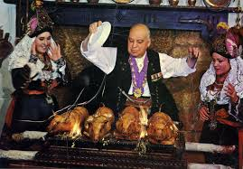

<p>Eran las últimas décadas del siglo XIX, la histórica ciudad de Segovia hoy Patrimonio de la Humanidad, que había conocido aquellos lejanos días de riqueza motivada por su agricultura, su ganadería y en especial por su industria lanera, aquellos paños que llevaban su nombre por toda Europa, aquella jornada que vio coronarse Reina a la figura señera de la Infanta Isabel La Católica como Reina de Castilla en su Plaza Mayor, aquella Boda Real de Felipe II en el Patio de Armas de su Alcázar, vive en esos días los momentos más bajos de su historia tras la decadencia y despoblamiento de la ciudad.  
<br /><br />
En la actualidad, su hijo Alberto Cándido, quien ostenta el título de Mesonero Mayor de Castilla, continúa al frente de la obra familiar, con la colaboración de su esposa, así como la de sus hijos, futuros continuadores de la tradición familiar, quienes son conscientes de la gran responsabilidad que tienen en la conservación de este legado histórico, y que tras varias generaciones desde el año 1905, lo han venido conservando y enriqueciendo. 
</p>